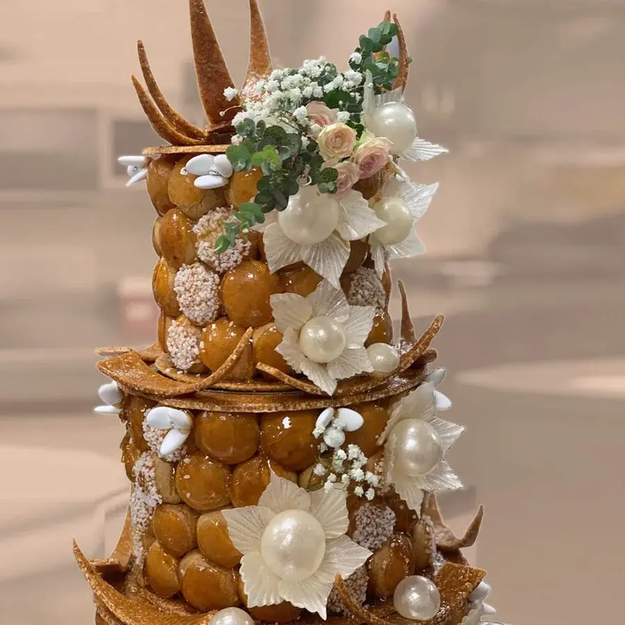
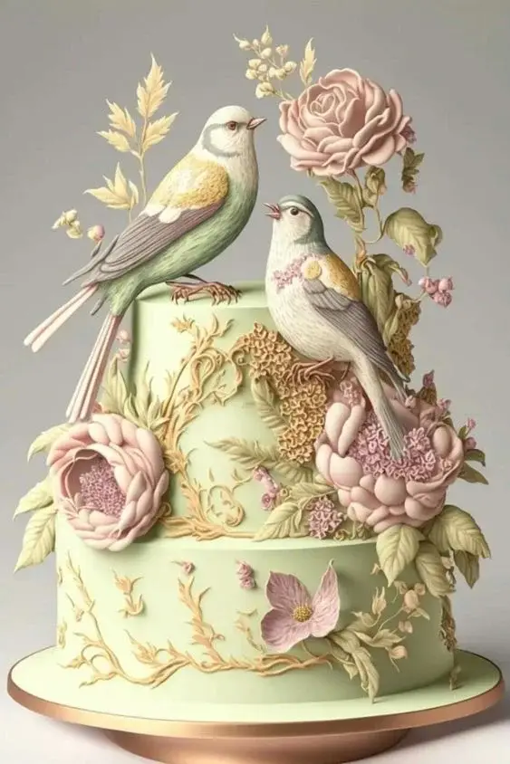
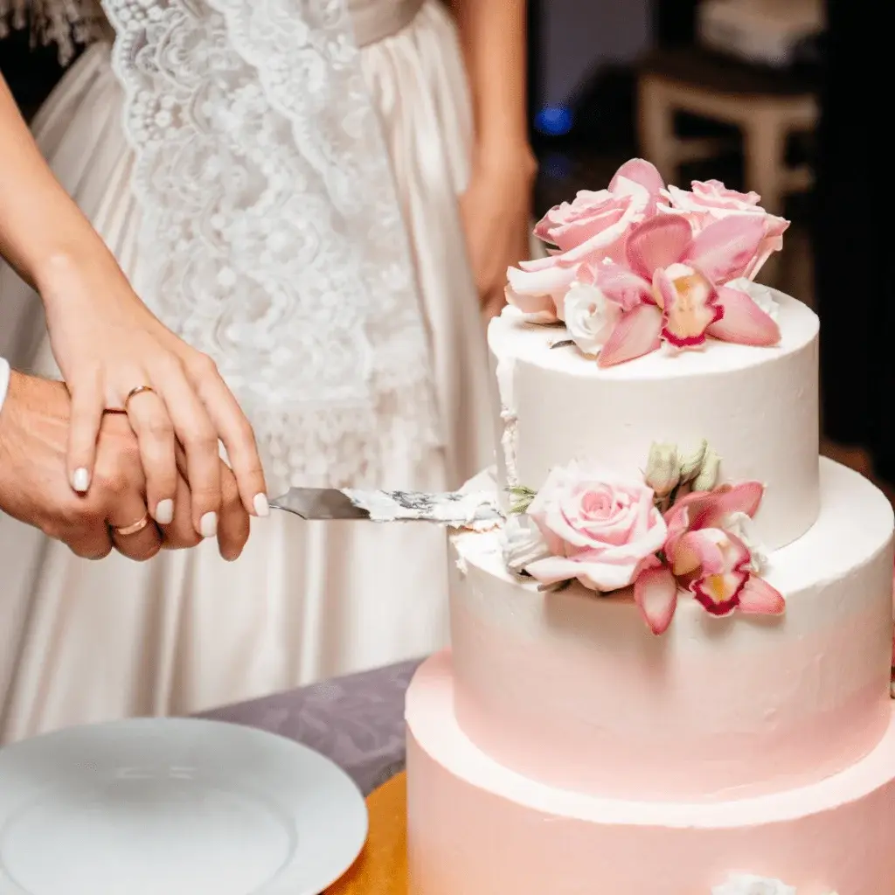
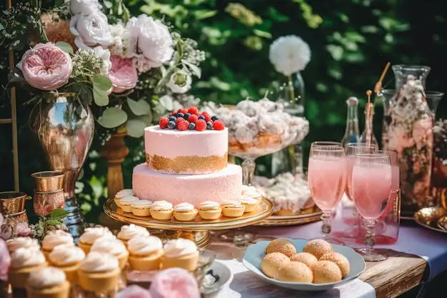
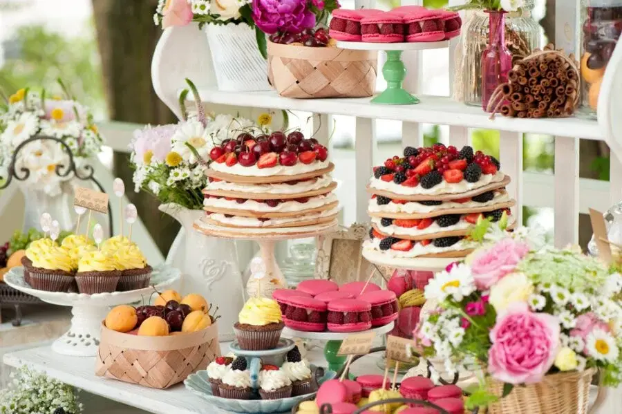
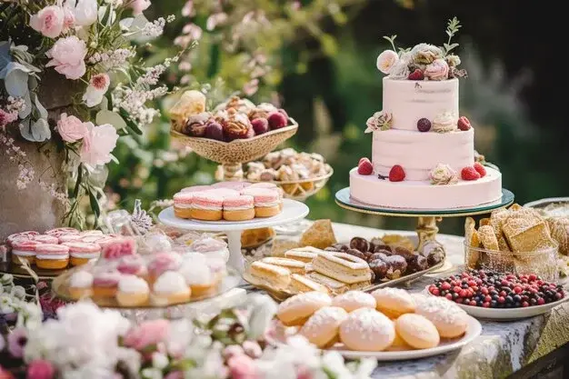
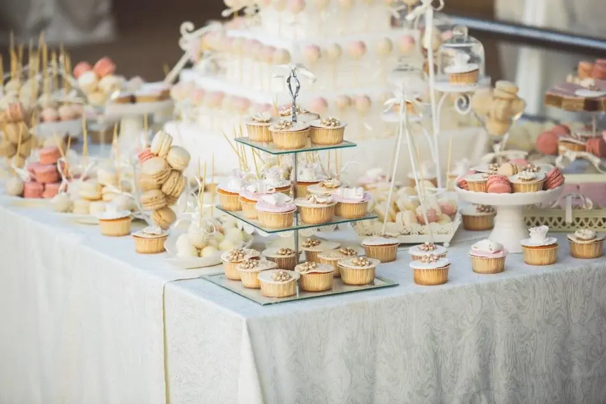
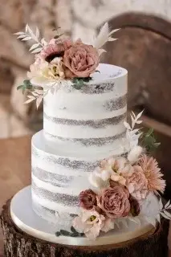
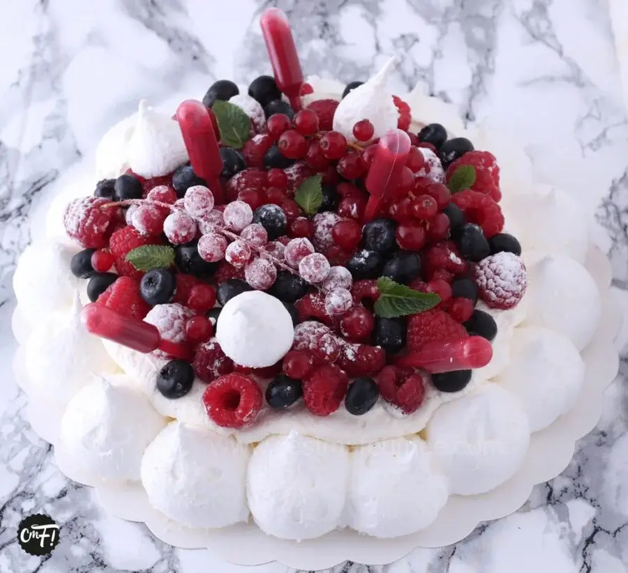

Comme la robe de mariée est au centre de la cérémonie, les gâteaux de mariage sont au centre de la réception. Il est le symbole de votre bonheur et de votre volonté de le partager avec vos proches. Il doit séduire esthétiquement les yeux de vos invités et séduire gustativement leurs palais. Ce choix doit être réfléchi pour incarner l’essence de votre couple.
De nombreuses gourmandises vous font envie, difficile de choisir ? Ne paniquez pas, je vais vous donner des astuces et des conseils pour élire le dessert idéal pour cette journée unique.
Vous rêvez d’une pièce montée de choux digne d’un grand film romantique.

La pièce montée de choux se distingue par ses petits choux fourrés de crème pâtissière, assemblés avec du caramel. Elle est l’incontournable des mariages traditionnels.
La configuration traditionnelle en cône représente la fécondité et la prospérité, consistant en une pyramide de choux ornée de nougatines, de fleurs en sucre, de dragées ou de rubans. Mais il n’est pas impossible d’imaginer une création avec une toute autre forme qui correspondrait mieux a votre couple. La taille et le nombre d’étages peuvent être adaptés selon le nombre d’invités, avec une moyenne de trois à quatre choux par personne.
Un pâtissier expérimenté pourra donner vie à vos idées les plus audacieuses en sculptant les choux et la nougatine à votre guise. Vous pouvez explorez diverses idées de pièces montées de choux pour trouver l'inspiration sur le site de pâtissiers bordelais comme chez Amand'in cake.
Amandine
Pour un couple unique des sculptures uniques !
La sculpture sur gâteaux de mariage est utilisée en pâtisserie pour créer des décors et des pièces montées spectaculaires. Vous pouvez également varier les goûts puisqu’il n’y a pas d’ingrédient spécifique pour ce type de création. Sa flexibilité vous permettra de matérialiser vos passions, votre histoire d’amour ou même le thème de votre mariage à travers une sculpture représentant un élément cher à votre histoire.
Vous avez également la possibilité de combiner différents éléments pour une création totalement unique. Les passionnés de voyage pourront combiner une carte du monde, un avion et des monuments emblématiques. Les gourmands peuvent se tourner vers des sculptures représentant des desserts variés, tandis que les sportifs pourront choisir des motifs en lien avec leur passion. Laissez libre cours à votre imagination pour une sculpture qui vous ressemble !

Varier les plaisirs avec un gâteau à étages.

Le gâteau de mariage à étages, communément appelé wedding cake, est originaire des Etats-Unis un élément incontournable des mariages modernes, originaire des États-Unis. Il se caractérise par ses multiples niveaux de génoise ou de sponge cake, généreusement fourrés de crème et habillés d’un glaçage raffiné, complété de décorations sucrées.
Ce dessert peut se décliner en une variété de formes, de tailles, de couleurs et de saveurs, permettant ainsi une personnalisation complète de votre création en fonction de vos préférences et du thème de votre mariage.
Le gâteau à étage est une option de dessert de mariage originale et entièrement personnalisable, s'adaptant à tous les styles et préférences gustatives que vous pourez exploiter avec ce pâtissier.
Meriem
Une solution pour les indécis, l’assortiment de desserts.
Vous ne savez pas quel gâteau de mariage choisir pour être sûr de satisfaire tous vos invités? Pas de souci, j’ai la solution. Optez pour l’assortiment de gâteaux. Vous pourrez sélectionner plusieurs types de desserts aux formes et aux parfums différents et vos invités trouveront le gâteau qui plaira à leur palais.
Tous vos choix seront présentés sur un stand élégamment décoré qui mettra en valeur tous vos gâteaux colorés. Ainsi vos desserts seront une satisfaction pour les yeux et les palais de vos invités.
Le style de votre mariage orientera également le choix : des gâteaux élégants et sophistiqués pour un mariage classique, ou des créations modernes et originales pour un mariage contemporain. Un mariage champêtre se prête bien à des gâteaux rustiques et savoureux.
Pour bien choisir votre assortiment de gâteaux de mariage, plusieurs critères sont à considérer.

Le nombre d'invités pour la quantité nécessaire.
Le style de votre mariage orientera également le choix : des gâteaux élégants et sophistiqués pour un mariage classique, ou des créations modernes et originales pour un mariage contemporain. Un mariage champêtre se prête bien à des gâteaux rustiques et savoureux.


N'oubliez pas de prendre en compte les préférences gustatives de vos invités, en variant les saveurs pour plaire au plus grand nombre.
Créez un impact visuel et gustatif remarquable en jouant avec les couleurs, saveurs, textures et décors. Ajoutez une touche personnelle à votre buffet de dessert avec des étiquettes, photos, fleurs, rubans ou autres éléments décoratifs. Cette formule originale et conviviale invite vos invités à se servir selon leur envie et à savourer les desserts debout, assis ou même en dansant

Ce choix cornélien de différents desserts a assortir peut être accompagné par votre pâtissier.
Nariné
Un dessert empreint de modernité

Le naked cake, surnommé « gâteau nu », est une version moderne du traditionnel wedding cake américain.
Directement importé des États-Unis, il se fait remarquer par son esthétique rustique et naturelle, valorisant sa texture et ses saveurs authentiques. Il se pare de décorations naturelles telles que fruits, fleurs, noix, ou branches, en harmonie avec ses saveurs pour un rendu visuel et gustatif mémorable. C’est un gâteau à étages constitué de superpositions de génoises, entrecoupées de crème, ganache, confiture ou fruits, sans la couverture habituelle de glaçage ou pâte à sucre. Cette conception laisse à nu ses couches, souvent imprégnées de sirops aromatiques pour en exalter le goût et la tendresse.
Le naked cake s’adapte à toutes les préférences, budgets et thèmes de mariage, offrant une large palette de personnalisations possibles sur votre création. Formes, tailles, couleurs, et saveurs peuvent être mixées pour créer un gâteau unique. Des éléments décoratifs tels que photos, figurines, et rubans peuvent également y être ajoutés, faisant du naked cake une option originale et conviviale pour célébrer votre mariage.
Ce choix cornélien de différents desserts a assortir peut être accompagné par votre pâtissier.
Charline
Gâteaux de mariage locaux de Bordeaux.
Reconnue pour sa richesse gastronomique et vinicole, Bordeaux brille également dans l’art de la pâtisserie. Cette ville accueille de nombreux pâtissiers talentueux et innovants, prêts à vous offrir des gâteaux de mariage esthétiques et aux multiples saveurs, parfaitement en accord avec vos désirs et le thème de votre mariage. Que vous ayez un faible pour les canelés, les macarons, le chocolat, les fruits ou les fleurs, vous découvrirez à coup sûr le gâteau de mariage qui vous ressemble parmi les spécialités locales bordelaises.
Voici quelques exemples inspirants de gâteaux de mariage locaux de Bordeaux. Des gâteaux gourmands et réconfortants comme le Paris-Brest, la pavlova, la tartelette au citron meringuée, le moelleux au chocolat, et plus encore. Des gâteaux classiques et des créations maison, telles que le fraisier, le mille-feuille, le choco-addict, le gâteau aux agrumes, et d’autres délices. Des créations originales aux mélange de saveurs comme le gâteau au chocolat et à la menthe, le gâteau à la pistache et à la framboise, le gâteau au citron et à la verveine, et bien d’autres.

En bref...
La sélectionner du gâteau de mariage représente un moment crucial et exigeant, nécessitant à la fois réflexion et créativité. Que votre choix se porte sur une traditionnelle pièce montée, une impressionnante sculpture sur gâteau, un élégant gâteau à étages, un assortiment varié de gâteaux aux différentes saveurs, un moderne naked cake ou encore un gâteau typique de votre région, il est essentiel de prendre en considération vos préférences personnelles, votre budget, le thème de votre mariage et les goûts de vos convives. Heureusement, les talentueux pâtissiers de notre région sont à votre disposition pour vous offrir des créations à la fois magnifiques et savoureuses, parfaitement en accord avec vos désirs et les spécificités de votre célébration.
Mon rôle en tant que wedding-planner sera de vous guider dans votre choix du dessert qui sublimera la fin de votre repas visuellement autant que gustativement et de vous trouver le pâtissier qui réalisera à la perfection votre choix. Et vous pourrez profiter pleinement de votre gâteau de mariage symbole de la douceur et du bonheur de votre union !